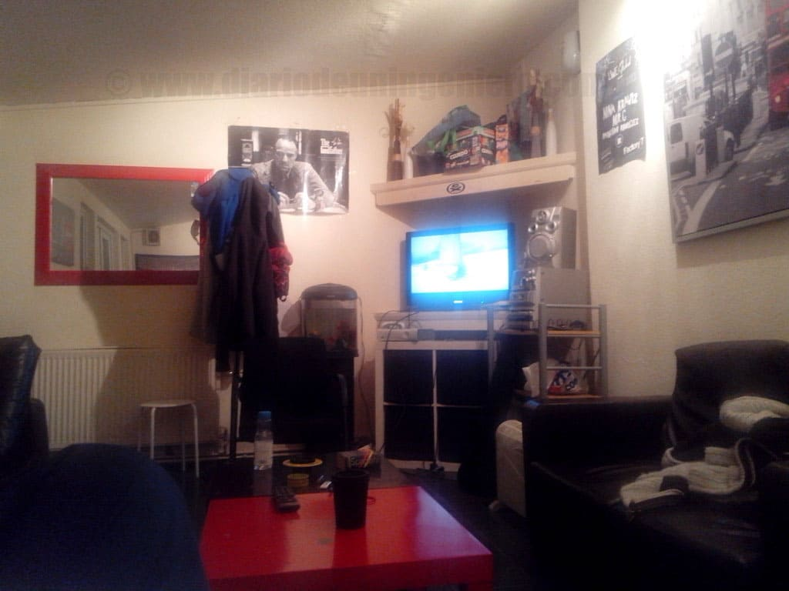
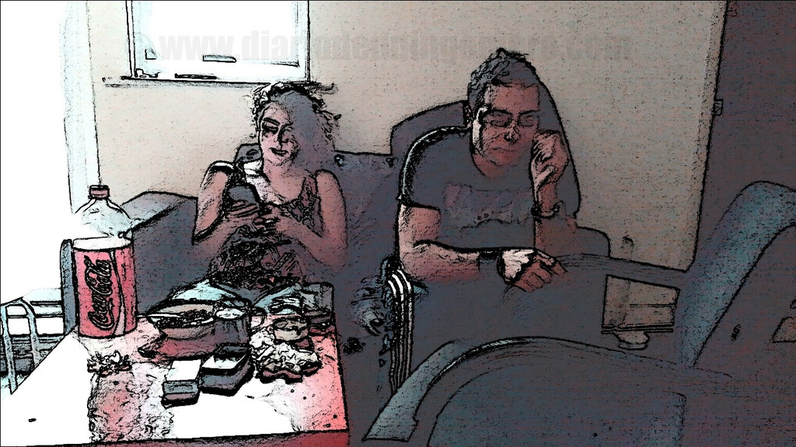

Esta parte es si cabe más importante que la de elegir un país, ya que aun viviendo en una ciudad hay barrios que hace parecer que estas en una ciudad diferente.
En Francia normalmente los barrios difíciles están separados de la ciudad y si hay barrios conflictivos en el centro de capitales como puede ser Marsella están bastante vigilados, si bien habrá que estudiar en internet las características de ese barrio y echar un ojo a google maps.
Además hay que vigilar si hay mucho tráfico o ruido y ocio nocturno por la zona, dependiendo de lo que busquemos y contrastar opiniones con diferentes vecinos antes de alquilar.
Lo primero a la hora de llegar a la ciudad es buscar un hostal, albergue o hotel donde poder empezar a buscar piso, para ello habrá que revisar lugares vía web.
Además ver sus opiniones así como elegir una opción no muy cara porque a veces buscar la casa y compañeros que quieres tener no es algo fácil y lleva tiempo.
 Para encontrar el hostal adecuado yo recomiendo la siguiente página, www.hostelworld.co.fr ,
la cual cuenta con numerosas valoraciones que te hara decantar por uno u otro lado.
Se deberá observar la distancia con respecto a centros comerciales o de alimentación o restaurantes y la cantidad de los mismos.
Si no hay apenas y el barrio es de perfil medio posiblemente los precios sean elevados al no haber una competencia en ese sector.
Para encontrar el hostal adecuado yo recomiendo la siguiente página, www.hostelworld.co.fr ,
la cual cuenta con numerosas valoraciones que te hara decantar por uno u otro lado.
Se deberá observar la distancia con respecto a centros comerciales o de alimentación o restaurantes y la cantidad de los mismos.
Si no hay apenas y el barrio es de perfil medio posiblemente los precios sean elevados al no haber una competencia en ese sector.
Visto esto, el siguiente paso será confeccionar una lista de pisos a visitar y crear la agenda correspondiente.
Esta agenda a mi modo de ver no debe exceder unos 6 pisos diarios ya que luego no os acordareis de todos y os dará una visión no muy ajustada.

En el caso en el que se vaya a probar la elección de compartir piso es la mejor, ya que alquilar un piso supondrá comprometerte a estar como mínimo 6 meses.
La mejor elección es hacerlo con gente local del país, que te pueda orientar en diferentes aspectos como ocio, salidas nocturnas, hacer compras, buscar cursos o trabajo.
Además lo más importante, mejoraras tu idioma pasivamente si bien si encontramos gente con un perfil parecido al nuestro de nuestro país no será una mala idea,
ya que a la larga la ayuda mutua y un ambiente más relajado hará que la tarea de búsqueda más llevadera.
Una mezcla de nacionalidades será mucho mejor ya que podrás contemplar puntos de vista bastantes diferentes y además podrás avanzar en todos los sentidos y te hará tener más experiencia para la siguiente vez.

Si nunca has compartido piso lo mejor es compartir con al menos alguien de tu zona geográfica o que comparta intereses comunes contigo ya que aunque incluso te lo tomes como una zona solo para dormir será algo muy importante.
Nunca sabes el tiempo que vas a tener que estar en casa.
Para esto la página más recomendable es :
Aunque siempre puedes buscar en otras páginas en las que conseguir el teléfono de la persona para llamar es gratuito como www.leboncoin.fr o vivastreet.com


A la hora de fijarse en el piso hay que tener en cuenta varios factores a parte de la zona y el precio y cuadrarlos con el precio en cuestión:

Para el alquiler de pisos el portal mas importante es: www.seloger.com//
Para fijar nuestro campamento base deberemos tener en cuenta las distancias :
Todo esto deberá verse lo menos comprometido con el precio que busquemos. Lo mejor es siempre ajustar el precio en nuestras búsquedas pero añadiendo un 25% adicional al precio máximo disponible, ya que puede que haya pisos que cumplan con casi todas nuestras condiciones y se salgan del rango que tuviésemos, a veces los precios llevan incluidos la posible rebaja en la negociación. De este modo, si son caros y siguen ahí puede ser porque no tengan casi visitas y si lleva mucho tiempo la habitación o el piso sin ser alquilados el dueño puede ser mucho más flexible y generoso a la hora de fijar la cantidad.
Normalmente los dueños exigen un deposito que nunca debe exceder al mes y medio del precio del alquiler. Con esto deberemos pagar el día de entrar como máximo dos veces y media el piso del alquiler contabilizando el precio del presente mes.
En la mayoría de países los dueños son exigentes con esto y si la normativa es más o menos favorable al propietario es algo que no deberemos fijarnos si no queremos empezar con problemas. Las apariencias engañan muchas veces así que nunca te dejes llevar por las primeras sensaciones a la hora de juzgar al dueño de la casa porque aunque pueda parecerte majo siempre te la podrá jugar en algún momento y hacerte abonar algún desperfecto que no hayas ocasionado tú.
A la hora de dejar el piso la mayoría de las veces si los contratos son entre iguales y no hay nada oficial habrá que ir hablando esto con antelación. A veces se dan casos en que los dueños intentan robarte esta con cualquier excusa. Si no nos fiamos demasiado siempre podemos aguantar lo máximo sin pagar para rentabilizar la fianza y quizás dejarnos 2 semanas en vez de un mes hasta que nos insten a abandonar.
© 2016 - All Rights Reserved - Diseñada por Sergio López Martínez
![[Valid RSS]](https://www.feedvalidator.org/images/valid-rss-rogers.png "Validate my RSS feed")